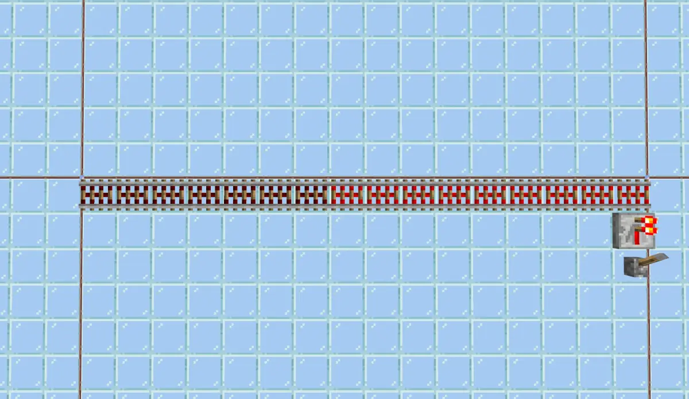
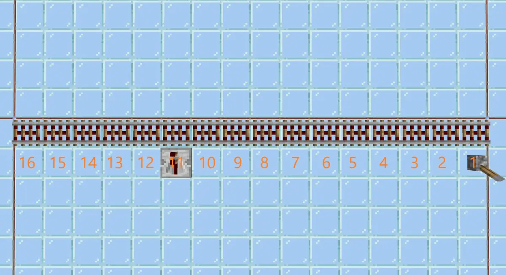
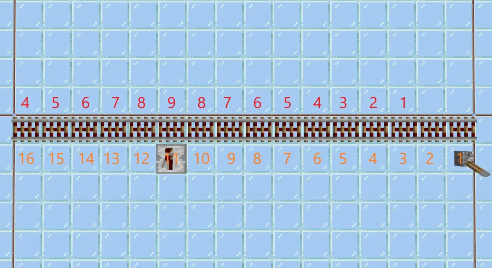
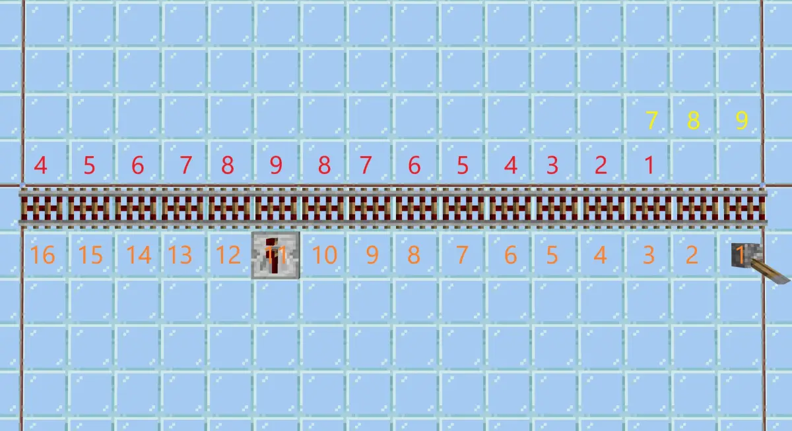
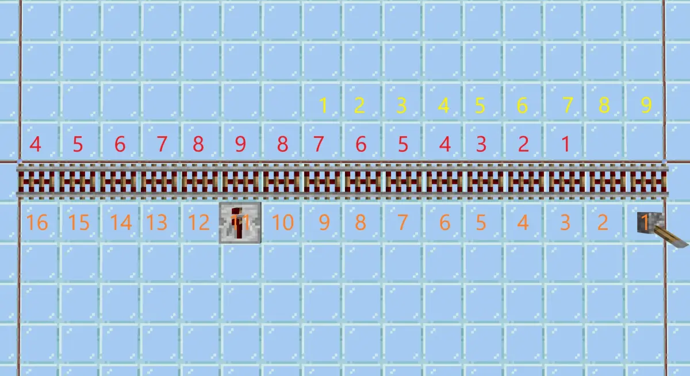
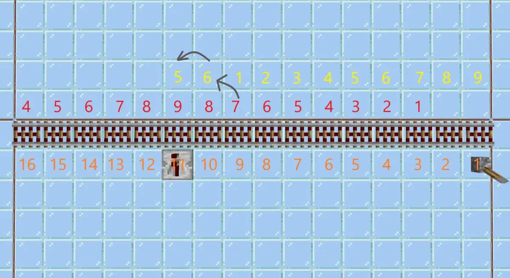
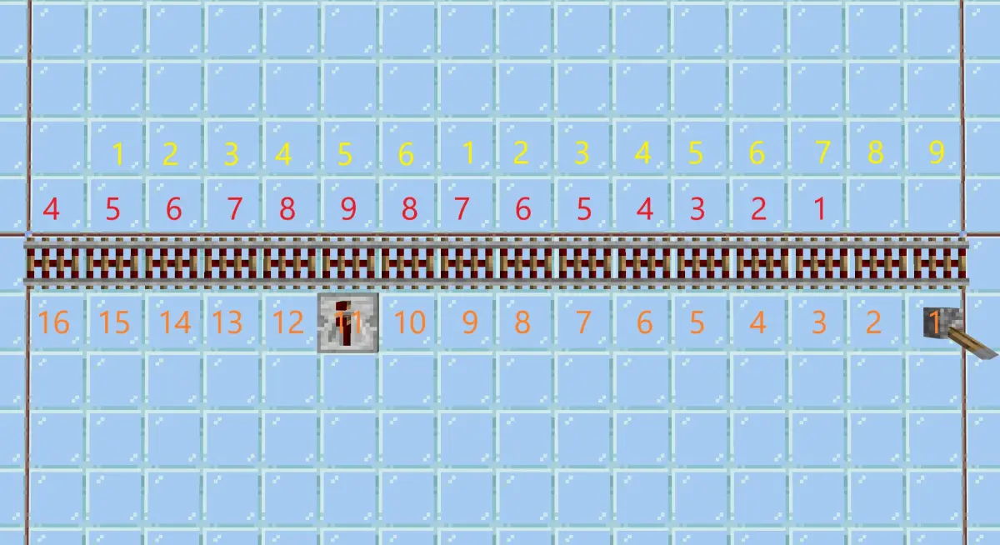

MCBE 铁轨的搜索及无延迟铁轨的部分解释（1.20+）
本文的铁轨指充能铁轨或激活铁轨。
铁轨在红石系统中被单独分类为铁轨传输者。
在红石系统依赖更新阶段，游戏遍历待更新列表，以列表中的元件为起点开始搜索元件。
详细搜索过程举例见前文。本文介绍铁轨元件在搜索过程中的行为。
铁轨的搜索与添加信号源
由于铁轨添加信号源的代码流程过于混乱，以及考虑到其他一些问题，以下内容不涉及代码的实际逻辑，仅为简化的部分等效表述，用于分析。
铁轨的保存的每个信号源包含以下信息：
- 阻尼，信号源的输出强度减去阻尼结果为正数，说明自己被激活。
- 数据值 data，最高为 9，意为铁轨间信号最大传输距离为 9 格。
- 信号源信息。
如果由非铁轨元件搜索到铁轨，则铁轨正常添加信号源信息，保存阻尼等信息，其中 data 设为 9，指针指向搜索起点的元件。
除非，信号源列表已经包含重复的元件。
当同时满足以下 3 个条件时，认为信号源重复：
- 阻尼相同；
- 数据值相同；
- 信号源坐标相同。
如果由铁轨搜索到铁轨，假设为 A 铁轨搜索到 B 铁轨，则将 A 铁轨信号源列表的最后一个 data 大于 1 的一项复制到 B 铁轨的信号源列表中，且 data 递减 1，并且覆盖 3. 信号源信息 为当前发起搜索的信号源。如果没有符合条件的则不添加。
此外，重复的信号源放弃添加。
当未添加任何信号源时，本条搜索线路终止。
实例分析
以下为一些实例分析，帮助你理解上面的过程。
实例 1

以单个中继器指向若干相连的激活铁轨为例，从中继器开始搜索元件，搜索到第一个铁轨，因此 1 号铁轨包含一个信号源：阻尼 0，data:9，信号源是中继器，没有异常。
铁轨搜索到相邻的 2 号铁轨，1 号铁轨信号源列表中最后一个信号源 data 为 9，大于 1，于是复制给 2 号铁轨：阻尼 0，data:8，信号源还是中继器。
同理 2 号铁轨搜索到 3 号铁轨，于是 3 号铁轨包含一个信号源：阻尼 0，data:7，中继器。
依次类推：
4 号铁轨：阻尼 0，data:6，中继器
5 号铁轨：阻尼 0，data:5，中继器
6 号铁轨：阻尼 0，data:4，中继器
...
9 号铁轨：阻尼 0，data:1，中继器
直到 9 号铁轨，其包含的信号源 data 为 1，10 号铁轨如果继续复制信号源，则 data 降为 0，超出铁轨最大间传输距离，于是未能添加信号源，搜索终止。
此时，9 个铁轨的信号源均为中继器，且 data 大于 0。如果中继器输出信号强度 15，则 15 减去阻尼 0，仍为 15，则铁轨被激活。
实例 2

现在我们添加 2 个信号源，11 号铁轨位置一个，1 号铁轨位置一个，为区分，11 号为中继器，1 号为拉杆。先放置中继器，再放置拉杆。
参照实例 1，我们可以快速得出：以中继器为中心两别各延申 8 格，中间 data 为 9，两边递减至 1，阻尼为 0。

现在放置拉杆，值得注意的是，当放下拉杆时，它会更新周围的红石元件，上一篇文章只讲述了放下非红石元件方块时，会更新周围 6 个面的红石元件。
至于放下红石元件时如何更新周围元件，那几篇不完全分析其实有讲，这里给出简单介绍：先将自己添加到待更新列表，再将下、中、上的 6 个面进行更新，如果自己是电容器，还要将同水平面上四个对角的电容器(如果有)加入更新。
总之拉杆更新到 1 号铁轨，铁轨把自己信号源列表内的所有元件加入更新，只不过刚好 1 号铁轨此时还没有信号源。
以拉杆为起点，搜索元件，易知 1、2、3 号铁轨均只是新添加拉杆进入信号源列表，阻尼均为 0，data 分别为 9、8、7。

4 号铁轨被 3 号铁轨搜索到，复制 3 号铁轨最后一个信号源，data 递减后为 6，且也没有重复的信号源。
同理 5~9 号铁轨，依然只是正常添加拉杆为信号源，其中 data 逐个递减至 1。

10 号铁轨，重点来了，9 号铁轨最后一个信号源 data 等于 1，不符合要求，复制倒数第二个：阻尼 0，data:7，中继器。data 减一为 6，中继器改为当前发起搜索的信号源：拉杆。
这个新的信号源 data 为 6，所以没有重合的信号源，10 号铁轨多了一个阻尼 0，data:6，拉杆的信号源。
11 号铁轨，继续复制 10 号铁轨的最后一个信号源，11 号元件多了一个阻尼 0，data:5，拉杆的信号源。

以此类推，直到 15 号元件有两个信号源：
- 阻尼 0，data:5，中继器。
- 阻尼 0，data:1，拉杆。

16 号复制 15 号，第二个信号源不合要求，复制第一个，但是信号源重复，于是停止添加，由于未添加任何信号源，搜索结束。
至此，1~15 号铁轨均包含 data 大于 0 的拉杆信号源，所以拉下拉杆后，有 15 个铁轨被激活。
后记
以上内容因经过大面积简化，只能代表铁轨的部分行为，对于大家已经见识过的某个魔法，本文不作解释。